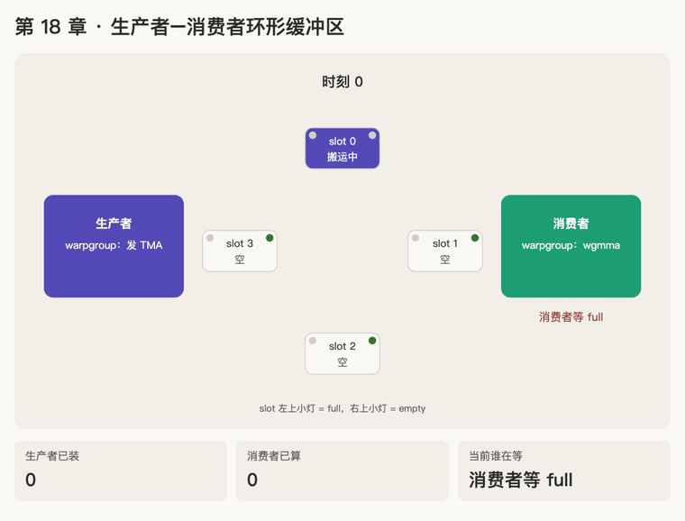

第 18 章 · Hopper ②：wgmma、warp specialization 与 persistent kernel
本地运行
git clone https://github.com/wikieden/cuda-to-tensor-core
cd cuda-to-tensor-core/code/notebooks
pip install jupyterlab torch numpy
jupyter lab ch18_warp_specialization.ipynb也可以下载后直接用 VS Code 打开 .ipynb 运行。需要 GPU 的章节在 Colab 里选「代码执行程序 → 更改运行时类型 → GPU」。
本章回答：Hopper 的 Tensor Core 指令
wgmma和 Ampere 的mma.sync有什么不同？为什么要把 block 里的 warp 分成"搬运组"和"计算组"？环形缓冲区 + full / empty 两组 barrier 怎么配合？persistent kernel 解决什么问题？一个 H100 GEMM 怎么从 32 TFLOP/s 做到超过 cuBLAS？
讲解日期：2026-11-14 · 上一章：第 17 章 Hopper ① · 下一章：第 19 章 CuTe
对应原文：Pranjal「Outperforming cuBLAS on H100: a Worklog」（materials/text/blog-pranjal-outperforming-cublas-h100.txt全文 411 行，Kernel 1–11 在第 98–312 行）；Colfax「Fast Matrix-Multiplication with WGMMA on NVIDIA Hopper GPUs」（text/blog-colfax-hopper-wgmma.txt）；PTX §9.7.17 wgmma（text/ptx-isa-9.4-focus-mma-wgmma-tcgen05-tma.txt第 10053–12039 行）；PG §4.12.1.3 Producer-Consumer Pattern Through Warp Specialization（text/cuda-programming-guide.txt第 19533–19710 行）、§4.10.7（第 18294–18583 行）；FlashAttention-3 论文 §3.1（text/flashattention-3.txt第 208–298 行）；GPU MODE L45（text/gpu-mode-lecture-45-outperforming-cublas-on-h100.txt）；Hopper tuning guide §4.1.2（text/hopper-tuning-guide.txt第 160–185 行）本章缩写：wgmma = WarpGroup Matrix Multiply-Accumulate（warpgroup 级矩阵乘累加）· warpgroup（4 个连续 warp，128 个线程）· SS / RS-GEMM = 两个操作数都在 Shared / A 在 Register、B 在 Shared 的矩阵乘（FA3 论文用语）
讲解
第一步：wgmma——4 个 warp 一起、异步地算（2026-11-14）
PTX §9.7.17.1：warpgroup = 4 个连续的 warp（首个 warp 的编号是 4 的倍数），128 个线程。Hopper 的 Tensor Core 指令 wgmma.mma_async 让一个 warpgroup 合作算一个 m64nNk16 的矩阵乘，N 可以是 8、16、24……256（PTX §9.7.17.2 的形状表）。
和 mma.sync（第 15 章）比：
mma.sync（Ampere） |
wgmma.mma_async（Hopper） |
|
|---|---|---|
| 合作单位 | 1 个 warp | 1 个 warpgroup（4 warp） |
| 一条指令的大小 | m16n8k16（2048 次乘加） | 最大 m64n256k16（262144 次乘加） |
| 操作数位置 | A、B 都要先 ldmatrix 进寄存器 |
A 在寄存器或 shared，B 必须在 shared，直接从 shared 读；累加器在寄存器 |
| 同步性 | 同步：指令完成才往下走 | 异步：发出后线程继续，用 wgmma.commit_group / wgmma.wait_group 等 |
Gordić 的计算（第 760–770 行）：m64n64k16 时，64 × 64 的累加器分给 128 个线程，每个线程拿 64 / 16 × 8 = 32 个 FP32 寄存器。
B 直接从 shared 读省掉了 ldmatrix，但要求 shared 里的布局符合 wgmma 的规定（带 swizzle 的"core matrix"排列，Colfax WGMMA 博客 "SMEM layout constraints" 一节）——这正好由 TMA 按 tensor map 里的 swizzle 模式直接写好（第 17 章）。
第二步：Pranjal 的前三步——从 32 到 423 TFLOP/s（2026-11-14）
H100 SXM 上 cuBLAS BF16 约 716 TFLOP/s（Pranjal 第 69 行）。
| Kernel | 做了什么 | TFLOP/s |
|---|---|---|
| 1 | 第 14 章的 warptiling 搬到 BF16（CUDA core） | 32 |
| 2 | 换成 TMA + wgmma + barrier | 317 |
| 3 | 更大的输出 tile：BM = BN = 128、BK = 64，用 m64n128k16 | 423 |
Kernel 2 一下子快 10 倍——这就是 Tensor Core 和 CUDA core 的差距（第 15 章）。Kernel 3 的经验："It is always better to use the largest available instruction and set BN = WGMMA_N"——指令越大，每条指令的固定开销占比越小。
第三步：warp specialization——搬运组和计算组分开（2026-11-14）
Kernel 3 里同一个 warpgroup 既发 TMA、又等数据、又算 wgmma，"搬"和"算"还是串着的。第 16 章的多级流水线可以解决，但在 Hopper 上有更彻底的办法——warp specialization（warp 专业化）。Hopper tuning guide §4.1.2 把它列为 TMA 的好处之一："Enables users to write warp specialized codes, where specific warps specialize on data movement……while other warps only work on local data within the SM."
Pranjal Kernel 4 把它讲成生产者–消费者问题：
- 生产者 warpgroup：只负责发 TMA，把 A、B 的 tile 一块块搬进环形缓冲区（circular buffer，QSIZE 个 slot）；
- 消费者 warpgroup：只负责等数据、做 wgmma；
- 两组 barrier 协调：
full[i]："slot i 装满了"——生产者（TMA 搬完）arrive，消费者 wait；empty[i]："slot i 用完了"——消费者 arrive，生产者 wait。
生产者： 消费者：
for k: for k:
i = k % QSIZE i = k % QSIZE
empty[i].wait() ← 等 slot 空 full[i].wait() ← 等 slot 满
TMA 搬 A_k, B_k → slot i wgmma 用 slot i
(TMA 完成时 full[i] 自动记账) empty[i].arrive() → 通知 slot 空了
初始化时让生产者"以为所有 slot 都是空的"。两边以各自的速度跑，谁快了就等对方——和工厂里的传送带一模一样。
结果：498 TFLOP/s（128 × 128 tile，QSIZE = 5）。
第四步：寄存器再分配与两个消费者（2026-11-14）
Kernel 5 想把输出 tile 做到 128 × 256，结果掉到 123 TFLOP/s：一个 warpgroup 128 个线程要放 128 × 256 = 32768 个累加器，每个线程 256 个——已经超过每线程 255 个寄存器的上限（第 5 章），溢出到 local memory。
解决办法：
- 两个消费者 warpgroup，各算 64 × 256 的一半：block 有 3 个 warpgroup（1 生产 + 2 消费），610 TFLOP/s；
- 寄存器再分配（
setmaxnreg）：生产者只发 TMA，根本用不了多少寄存器；把它的寄存器上限压到 24，消费者提到 240（240 × 128 × 2 + 24 × 128 = 64512 ≤ 65536），631 TFLOP/s。FlashAttention-3 算法 1 第 3、12 行做的是同一件事："Deallocate / Reallocate predetermined number of registers"。
第五步：persistent kernel 与调度顺序（2026-11-14）
Kernel 6 起的思路：只启动 132 个 block（= SM 数），每个 block 循环处理多个输出 tile，这叫 persistent kernel（常驻 kernel）。好处：
- 算完一个 tile 写回结果时（store 要几千个周期），生产者已经开始搬下一个 tile的数据——store 的延迟被藏起来；
- 没有第 2 章的"最后一波不满"问题，可以自己决定 tile 分配；
- 可以控制 tile 的处理顺序来提高 L2 命中：Pranjal 把 tile 按 16 × 8 的组排，L2 命中率 83%（cuBLAS 70%），660 TFLOP/s；最后用 Hilbert 曲线排 tile，再涨 1%。
一个反直觉的细节（第 226 行）：用 128 个 SM 反而比用满 132 个快（655 vs 660），因为 tile 正好整除成 16 × 8 的组。
第六步：剩下的几步与全景（2026-11-14）
| Kernel | 改动 | TFLOP/s | 相对 cuBLAS |
|---|---|---|---|
| 1 | CUDA core warptiling | 32 | 4% |
| 2 | TMA + wgmma | 317 | 44% |
| 3 | 大 tile、大指令 | 423 | 59% |
| 4 | warp specialization | 498 | 70% |
| 5 | 2 个消费者 + 寄存器再分配 | 631 | 88% |
| 6 | persistent + tile 分组提高 L2 命中 | 660 | 92% |
| 7 | 更快的 barrier API | 704 | 98% |
| 8 | thread block cluster（TMA multicast） | 734 | 102% |
| 9–10 | 微优化、异步 store | 758 | 106% |
| 11 | Hilbert 曲线排 tile | 764 | 107% |
（数字来自 Pranjal 博客第 100–312 行，H100 SXM、BF16。超过 cuBLAS 是在他测的特定尺寸上，不代表所有尺寸。）
FlashAttention-3 用的是同一套结构（论文 §3.1、算法 1）：生产者 warpgroup 用 TMA 把 K、V 块装进 s 级环形缓冲区，消费者 warpgroup 做两次 GEMM（QKᵀ 和 PV）加 softmax；论文还加了"乒乓调度"——两个消费者 warpgroup 错开，一个算 softmax 时另一个用 Tensor Core（第 22 章）。
动画演示：生产者–消费者环形缓冲区

可交互版：animations/18-warp-specialization.html。开关：slot 数（2 / 4）、谁更快（生产者快 / 消费者快）。
怎么看：
- 中间是一圈环形缓冲区，每个 slot 标着"空 / 搬运中 / 满 / 计算中"；
- 左边生产者每一帧拿一个空 slot 发 TMA，右边消费者拿一个满 slot 做 wgmma；
- 每个 slot 旁边两个小灯：full 和 empty barrier 的状态；
- 调成"生产者快"，看缓冲区很快被装满、生产者开始等 empty；调成"消费者快"，看消费者等 full。
练习与作答记录
题 1：wgmma m64n256k16、累加器 FP32。一个 warpgroup 每个线程要多少个寄存器放累加器？为什么 Pranjal 的 128 × 256 输出 tile 用一个消费者 warpgroup 时性能暴跌？
作答：（待作答）
题 2：环形缓冲区 QSIZE = 3。按顺序写出生产者处理第 0、1、2、3 块时分别要等哪个 barrier、写进哪个 slot；消费者处理第 0 块完成后要做什么，才能让生产者搬第 3 块？
作答：（待作答）
题 3：persistent kernel 只启动 132 个 block。和"每个输出 tile 一个 block"相比，它在 store 延迟、尾部效应、L2 命中三方面各有什么好处？
作答：（待作答）
口诀
wgmma：四个 warp 一起、一条指令一大块、B 直接从 shared 读、发了就走；
分工：搬运组只发 TMA，计算组只做 wgmma；
环形传送带两盏灯：full 亮了消费者拿，empty 亮了生产者装；
寄存器劫贫济富：搬运组只留 24 个，计算组拿 240 个；
常驻 132 个 block 循环干：store 时就搬下一块，tile 排好顺序吃 L2。
本章复习卡片
- C42（wgmma 与 mma.sync 的四点不同：warpgroup、m64nNk16、B 在 shared、异步）
- C43（warp specialization：生产者 / 消费者 warpgroup、环形缓冲区、full / empty barrier、
setmaxnreg寄存器再分配） - C44（persistent kernel：block 数 = SM 数、循环取 tile；藏 store 延迟、消尾部、控制 tile 顺序提高 L2 命中）
附录 · 延伸阅读
留给以后深入学习用，不影响本章主线。★ 是建议先读的。
推荐阅读
| 读什么 | 读哪里 | 读它为了什么 |
|---|---|---|
| ★ Pranjal「Outperforming cuBLAS on H100」 | text/blog-pranjal-outperforming-cublas-h100.txt 第 98–312 行 |
本章主线，每一步的代码与 profiling |
| ★ Colfax WGMMA 教程 | text/blog-colfax-hopper-wgmma.txt（WGMMA 第 43 行、SMEM 布局约束第 151 行、同步第 315 行、core matrices 第 362 行） |
用 CuTe 写 wgmma 的细节 |
| ★ FlashAttention-3 §3.1–3.2 | text/flashattention-3.txt 第 208–369 行 |
warp specialization + 乒乓调度 + GEMM / softmax 重叠 |
| PTX §9.7.17 | text/ptx-isa-9.4-focus-mma-wgmma-tcgen05-tma.txt 第 10053–12039 行 |
warpgroup 定义、形状表、wgmma.fence / commit_group / wait_group |
| PG §4.12.1.3、§4.10.7 | text/cuda-programming-guide.txt 第 19533–19710、18294–18583 行 |
官方的 warp specialization 例子 |
| GPU MODE L45 | text/gpu-mode-lecture-45-outperforming-cublas-on-h100.txt |
Pranjal 本人的讲座字幕 |
| gau-nernst「tcgen05 for dummies」Warp specialization / Persistent kernel 两节 | text/blog-gau-nernst-tcgen05-for-dummies.txt 第 793–917、992–1066 行 |
同一套结构在 Blackwell 上（第 20 章） |
code/fast-cu/ |
Pranjal 的代码 | M5 里程碑对照 |
数学原理
- wgmma 累加器寄存器：m64nN 的 FP32 累加器有 \(64N\) 个数，分给 128 个线程，每线程 \(N/2\) 个寄存器；N = 256 时为 128 个——再加上 A 的寄存器和地址变量，接近 255 的上限。
- 寄存器预算：\(R_{\text{prod}} \cdot 128 + R_{\text{cons}} \cdot 128 \cdot n_{\text{cons}} \le 65536\)。
- 环形缓冲区所需 slot 数：要藏住一次 TMA 的延迟 \(L\)，slot 数 \(\ge 1 + L / t_{\text{wgmma}}\)（Little 定律）；但 shared memory 有限，大 tile 时只能少开几个 slot（Pranjal 从 5 降到 3）。
公式 / 代码清单
| 名称 | 代码 |
|---|---|
| wgmma | wgmma.mma_async.sync.aligned.m64n128k16.f32.bf16.bf16 {d...}, descA, descB, ...; |
| wgmma 同步 | wgmma.fence.sync.aligned; → 若干 wgmma.mma_async → wgmma.commit_group.sync.aligned; → wgmma.wait_group.sync.aligned N; |
| 寄存器再分配 | setmaxnreg.dec.sync.aligned.u32 24;（生产者） / setmaxnreg.inc.sync.aligned.u32 240;（消费者） |
| 生产者循环 | empty[i].wait(); arrive.expect_tx(full[i], bytes); TMA(A_k, B_k → slot i, full[i]); |
| 消费者循环 | full[i].wait(); wgmma(slot i); empty[i].arrive(); |
| 编译目标 | -arch=sm_90a（wgmma、setmaxnreg 只在 sm_90a 上可用） |
代码对照：把本章的数字用代码算一遍
用 NumPy 在 CPU 上模拟同样的规则。代码在仓库本地
cuda-programming/solutions/chapter-code/ch18_warp_specialization.py，配套测试tests/test_ch13_18.py；同一章的 notebook：notebooks/ch18_warp_specialization.ipynb（讲解和代码放在一起，一格一格边读边跑）。在线版不带代码文件，下面摘了关键几行。Mac 上直接能跑，不需要 GPU（wgmma / setmaxnreg 要 sm_90a 的 GPU [GPU]；这里只算寄存器账和模拟环形缓冲区）：
bash cd cuda-programming/solutions/chapter-code uv run python ch18_warp_specialization.py # 一步一步打印 uv run pytest tests/test_ch13_18.py
讲义 ↔ 代码：
| 讲义 | 公式 / 说法 | 写法 | 跑出来 |
|---|---|---|---|
| 第一步 m64n64 累加器 | 64 × 64 ÷ 128 | accum_regs_per_thread(64, 64) |
每线程 32 个 |
| 第三步 生产者 / 消费者 | full / empty 两组 barrier | run_ring(20, 5, 2, 1) |
消费者按顺序拿到 20 块；生产者快时要等 empty |
| 第四步 128 × 256 一个消费者 | 32768 ÷ 128 | accum_regs_per_thread(128, 256) |
256 > 255，溢出 |
| 第四步 寄存器再分配 | 240 × 128 × 2 + 24 × 128 | register_budget(24, 240) |
64512 ≤ 65536 |
| 第六步 全景 | ÷ cuBLAS 716 | PRANJAL |
4% → 107% |
关键几行：
i = produced % qsize
if not empty[i]: break # empty[i].wait()：slot 还没用完，生产者等
slots[i] = produced # TMA 搬 A_k、B_k → slot i
full[i] = True # TMA 完成时 full[i] 自动记账
i = consumed % qsize
if not full[i]: break # full[i].wait()：数据还没到，消费者等
got.append(slots[i]) # wgmma 用 slot i
empty[i] = True # empty[i].arrive()
代码里才看得到的 3 件事：
empty初始全是 True：对应讲义说的"初始化时让生产者以为所有 slot 都是空的"，否则第一块谁也开始不了。- "一拍"是编的时间单位：
producer_speed=2表示生产者每拍能装两块；只用来看"谁快谁等"，不对应真实周期。 - Kernel 8 算出来是 102.5%：734 / 716 = 1.025，讲义表写 102%（截断），测试按 102–103 之间核对。
自己改一改（不影响练习答案）：
- 把
run_ring的 QSIZE 从 5 改成 1、2，生产者快的时候看它等了多少拍。 - 用
register_budget试试生产者留 40 个、消费者 232 个，看还放不放得下。